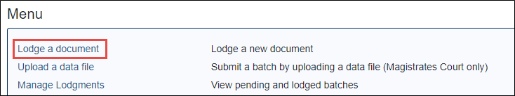
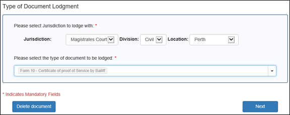
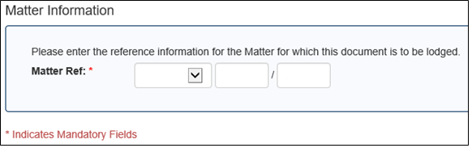
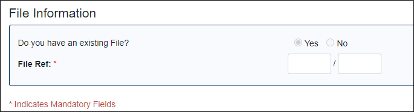
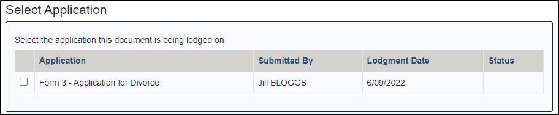
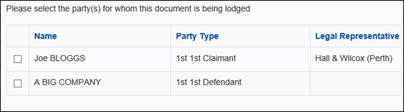
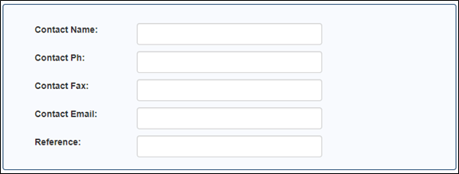
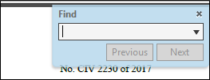
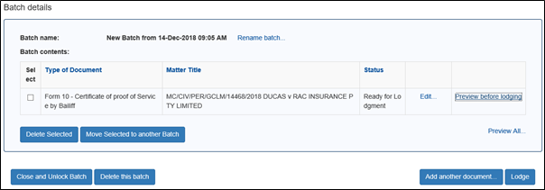
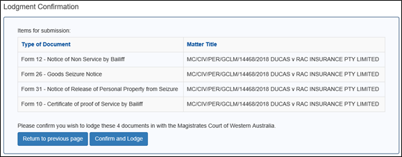

|
|
eCourts Portal of Western Australia - Help: eLodgment |

Lodge a Non-originating Document
This step-by-step guide covers how to lodge a document on an existing matter.
01. After successfully logging in, click on the eLodgment link on the main menu.

02. From the eLodgment main menu click Lodge a Document.

03. Specify the jurisdiction (e.g. Magistrates Court), division (e.g. civil) and location (e.g. Perth, Karratha) of the matter you wish to lodge the document on.

04. Select the name of the document that you wish to lodge.
05. Click the Next button.
The Matter Information screen appears (for all jurisdictions other than Family Court).

NOTE: If you are lodging in the Family Court then the File Information screen appears. Enter your file index number and year.

06. Enter the index type (e.g. RSTN), number (e.g. 123) and year (2018) of the matter you wish to lodge the document on.
These details can be found on the associated document(s) issued by the court for this matter.
NOTE: Most types of documents can only be lodged on a matter if you are a party to the matter, or a legal representative to a party on the matter.
07. Click the Next button.
If you are lodging onto a Family Court file, then the Select Application screen appears. Tick the relevant application and then click Next.

The Party Information screen appears.

08. Select the party or parties you are lodging on behalf of; and click the Next button.
The Contact Information for this Lodgment screen appears.

If your organisation has a phone number, fax number and an email address recorded against it in the court’s system then these details automatically populate. And if a reference was recorded against the originating document, then this also automatically populates.
09. Review / amend the contact information.
10. Click the Next button.
The next screen displays. Different document types will require you to enter different information, whilst others will require you upload a copy of a document. Some of the screen types are:
- Confirm Party Fee Type(s)
- Modify Document Heading
- Spent Conviction Application Details
- Extraordinary Drivers Licence Application Details
- Judgment Details
- Document Details
- Additional Attributes
- Amount Owed
- Service Details
- Select Hearing Details
- Geographical Address
- Upload Document (the system allows uploads in Word .doc and .docx; and for a small number of documents only in PDF – if you do upload in PDF please ensure that the PDF is searchable)
NOTE: Creating a PDF as searchable is done at the time of scanning and depends on what hardware you are using. You can check that a PDF is searchable by pressing “Ctrl s” on the keyboard. If a Find field appears the PDF is searchable.

11. Proceed through the wizard completing each page until you reach the Batch Details screen.
The Batch Details screen appears.

eLodgment automatically creates a lodgment ‘batch’ containing un-lodged documents.
From here you can:
- Preview a document (to confirm all information is present and correct prior to lodging.
- Edit a document (to correct any errors or omissions, or complete the online wizard if you saved a partially complete document.
- Add another document to the batch.
- Delete a document from the batch, if you no longer wish to lodge that document.
- Delete the whole batch.
- Move a document to a new batch (to be lodged separately).
- Unlock the batch. This will make it available to other users within your organisation to add document(s) to / lodge.
- Lodge the batch with the Courts.
NOTE: If you choose to add another document to the batch it must be for the same jurisdiction/division/location of the first document.
12. Once your batch is ready for lodgment click the Lodge button.
The Lodgment Confirmation screen displays.

13. Some documents require a fee to be paid. If this is the case enter valid credit card details. Otherwise click the Confirm and Lodge button.
The Batch Processing screen appears.
14. Leave this screen open until it says Batch Complete.
You can view the complete batch from here.